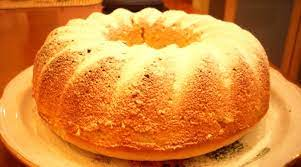
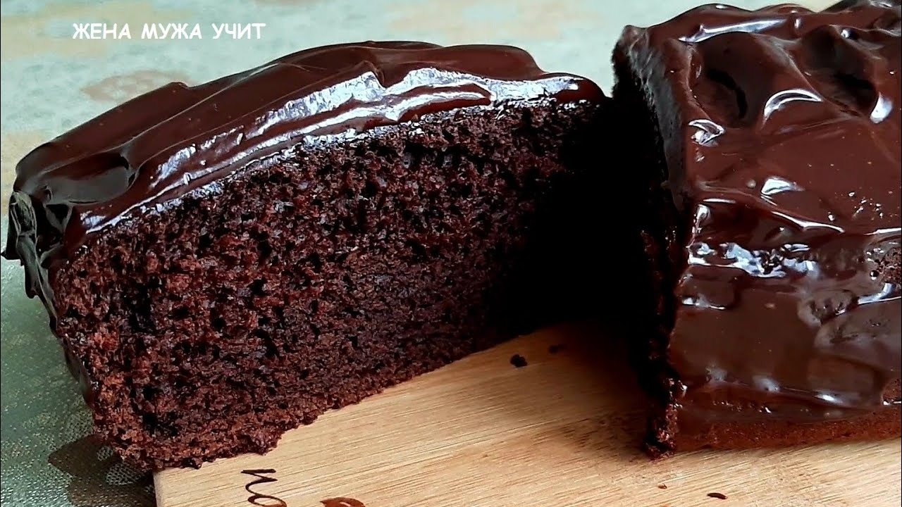
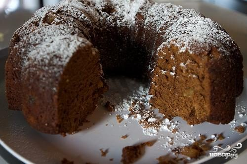

Рецепти кексиків
Кекси на кефірі
- Борошно – 230 г
- цукор – 150 г
- кефір – 130 мл
- вершкове масло – 100 г
- яйця – 2 шт.
- розпушувач – 10 г
- ванільний цукор – 1 ч.л.
- сіль – невелика дрібка
- родзинки (за бажанням) – 100 г
- цедра невеликого лимона (за бажанням)
У мисці змішуємо просіяне борошно, розпушувач, сіль і цукор.
Яйця розтираємо з цукром, ванільним цукром і сіллю. Додаємо розтоплене масло (не гарячим), кефір, родзинки і цедру лимона. Все добре перемішуємо.
В окремому посуді змішуємо борошно з розпушувачем і просіваємо в яєчно-кефірно-масляну суміш. Добре перемішати.

Розкладаємо його по формах (заповнюючи приблизно на 3/4 об’єму). Силіконові форми можна нічим не змащувати, алюмінієві ж обов’язково слід змастити маслом, а краще вставити додатково паперові формочки.
Випікаємо при температурі 180°С до красивого рум’яного кольору, в середньому 30-35 хвилин. Перевіряємо готовність за допомогою дерев’яної шпажки або сірника. Остуджені кекси за бажанням посипаємо цукровою пудрою.
Кекси брауні
- Борошно – 100 г
- масло вершкове – 180 г
- шоколад – 100 г
- цукор – 200 г
- яйця – 4 шт.
- какао – 40 г
- розпушувач – 1 ч.л.
Вершкове масло розтопити з шоколадом на водяній бані, трохи остудити і злегка збити міксером. Додати цукор і знову добре збити.
Далі по одному додаємо яйця і після кожного збиваємо масу впродовж хвилини.

В окрему ємність просіюємо борошно, какао і розпушувач.
Об’єднуємо сухі й рідкі інгредієнти та вимішуємо тісто до однорідності.
Розкладаємо тісто по формах (кількість тіста розрахована десь на 12-14 невеличких кексиків). Випікаємо кекси в розігрітій до 180°С духовці близько 20 хвилин.
Пряний кекс
- Борошно – 300 г
- олія – 150 мл (без запаху)
- яйця – 3 шт.
- цукор – 150 г
- сметана – 50 г
- сметана – 50 г
- імбир сухий – 1,5 ч.л.
- кориця – 1 ч.л.
- мускатний горіх – 0,5 ч.л.
- яблука – 2-3 шт.
Борошно просійте з розпушувачем, додайте всі спеції та перемішайте.
Яйця збийте з цукром, потім збиваючи, потроху вливайте олію. Збивайте до розчинення цукру. Повинна вийти легка повітряна маса.
У суху масу додайте половину масляної суміші та сметану. Розмішайте ложкою.
Потім додайте решту маси і розмішайте до однорідності. Сильно вимішувати не потрібно.

Яблука помийте, очистіть від серцевини та шкірки. Наріжте невеликими шматочками та перемішайте з манкою.
Додайте яблука в тісто, перемішайте. Розкладіть тісто в порційні форми. Силіконові можна нічим не змащувати, металеві краще змастити олією.
Випікайте кекси 25-30 хвилин при температурі 180°С. Потім вимкніть духовку і залиште їх там на 7-10 хвилин. Посипте остиглі кекси цукровою пудрою і подавайте до столу!
Смачного